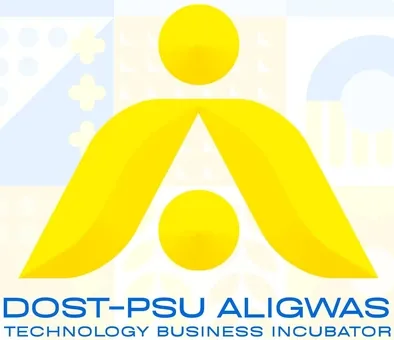

Aligwas TBI
Pangasinan State University · Region I
Aligwas TBI (DOST-PSU Aligwas Technology Business Incubator) is hosted by Pangasinan State University (PSU) in Region I (Ilocos Region), with operations anchored at PSU and its Bayambang campus, serving Lingayen and the wider Pangasinan province. "Aligwas" is a local word meaning "progress" or "advancement," reflecting the center's mission to drive innovation, entrepreneurship, and sustainable solutions.
- Category
- Technology Business Incubator
- Host institution
- Pangasinan State University
- City
- Lingayen, Pangasinan
- Region
- Region I
- Operating status
- Operating
About the Center
Established under the Higher Education Institution Readiness for Innovation and Technopreneurship (HEIRIT) program of the DOST-Philippine Council for Industry, Energy, and Emerging Technology Research and Development (PCIEERD), the TBI combines state resources with the university's intellectual capital. It has a strong focus on sustainable food system solutions and food security, supporting startups and incubatees from Pangasinan in product development, market testing, and building the business expertise needed for sustainable ventures.
Programs & Services
- Business Incubation Program — Support for startups and incubatees developing products and building sustainable ventures.
- Pre-Incubation & Ideation — Early-stage guidance for student and community innovators shaping business concepts.
- Technical Assistance & Consultancy — Expert support for product development and market testing.
- Sustainable Food System Programs — Flagship support for food security and sustainable food system innovations.
- Mentoring & Advisory — Coaching from mentors, industry experts, and business advisors.
- Technopreneurship Training — Capacity-building on business modeling and enterprise development, including student pitch activities.
- DOST-PCIEERD Grant & Funding Linkage — Assistance in accessing DOST seed funding and startup grants.
- Market & Network Linkage — Connections to markets, partners such as TESDA, and the regional innovation ecosystem.
Contact
Sources & references
- aligwastbi.psu.edu.ph
- pia.gov.ph/news/dost-psu-pioneer-food-security-innovation
- main.psu.edu.ph/panamaanta-tbi-caravan-a-triumph-of-innovation-and-communit…
Details are drawn from public records and the sources above, July 2026.
Startupreneur Innovation Hub · synced from the Notion catalog (July 2026) · status: published.